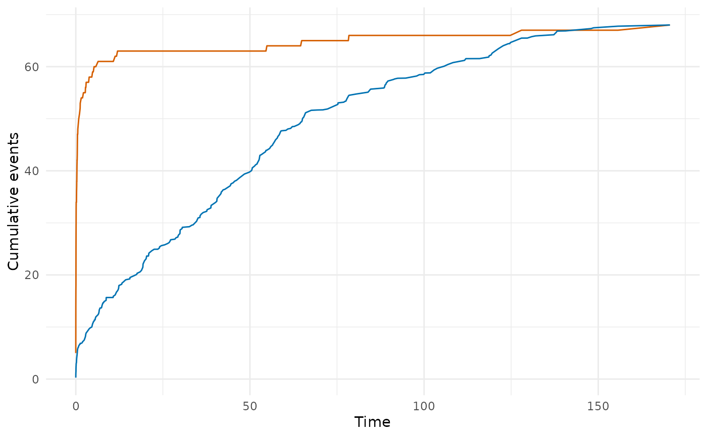

Compare a fitted hazard model with the data two ways: its survival curve
against the nonparametric Kaplan-Meier estimate, and the number of events
it expects against the number observed, tallied over follow-up. This is
the R equivalent of the SAS hazplot.sas macro and implements the
conservation-of-events diagnostic.
Arguments
- object
A fitted
hazardobject (withfit = TRUE).- time_grid
Optional numeric vector of time points at which to evaluate the parametric model. If
NULL(default), uses the distinct Kaplan-Meier times of the fitted data, which are the event times and the censoring times. A supplied grid must hold finite, non-negative times. It is sorted and exact repeats dropped, because the cumulative columns accumulate in time order.
Value
A data frame with one row per time point and columns:
- time
Evaluation time.
- n_risk
Number at risk at this time: subjects still in follow-up. A subject with an entry time is at risk only after it.
- n_event
Number of events at this time.
- n_censor
Number censored at this time.
- km_surv
Kaplan-Meier survival estimate, using the counting-process risk set when the fit has entry times.
- km_cumhaz
Kaplan-Meier cumulative hazard (\(-\log(\text{km\_surv})\)).
- par_surv
Parametric survival from the fitted model, at the covariate means for a model with covariates. For plotting against
km_surv; not used forcum_expected.- par_cumhaz
Parametric cumulative hazard, at the covariate means for a model with covariates. For plotting; not used for
cum_expected.- cum_observed
Cumulative observed events to this time, weighted by the case weights for a weighted fit.
- cum_expected
Cumulative expected events: over the patients leaving follow-up by this time, the sum of each patient's own cumulative hazard at exit minus that at entry, weighted by the case weights for a weighted fit. With
time_windows, both cumulative hazards use the patient's covariate window at exit, as the likelihood does.- residual
Expected minus observed (
cum_expected - cum_observed).
For multiphase models, additional columns are appended for each
phase: par_cumhaz_<phase>, also at the covariate means.
An attribute "summary" is attached with scalar diagnostics:
total observed events, total expected events, and the final residual.
Details
The diagnostic is for right-censored data: every stored status must be 0 (censored) or 1 (event). A fit with any left-censored (status -1) or interval-censored (status 2) row is refused with an error.
At each time point the function computes:
The Kaplan-Meier survival and cumulative hazard.
The parametric survival and cumulative hazard from the fitted model at the covariate means (and per-phase components for multiphase models). This is the curve to plot against the Kaplan-Meier estimate.
Cumulative observed events vs. cumulative expected events. Each patient's expected count is their own cumulative hazard, from their own covariates, at the end of their follow-up, less their cumulative hazard at entry when the fit is left truncated (
time_loweron a status 0 or 1 row). These are summed over the patients leaving follow-up at each time.The running residual (expected minus observed).
The conservation-of-events principle says a model fit by maximum
likelihood predicts as many events as were observed: add up every
patient's cumulative hazard over their follow-up and you get the event
count back. The final residual is then zero and the printed
"Conservation ratio (E/O)" is 1. A multiphase fit with Conservation of
Events applied (control = list(conserve = TRUE), the default) meets the
identity by construction. Weibull and exponential fits meet it at the
exact maximum, so at a converged fit E/O sits close to 1, off only by how
far short of the maximum the optimizer stopped. The log-logistic and
log-normal models carry no such identity, and for them E/O is a check of
calibration in total.
The parametric curve is a different quantity. For a model with
covariates it belongs to one "mean patient" with average covariates, and
the mean patient's cumulative hazard is not the average of the patients'
cumulative hazards, so par_cumhaz does not enter the expected count.
For an intercept-only model every patient shares that curve. Without
entry times each patient's expected count is the curve at their exit time;
with entry times it is the curve's rise from entry to exit, so the two
differ. The means are those of the design-matrix columns, taken phase by
phase when a multiphase fit's covariates enter only through the phase
formulas, so a factor enters as the proportion of patients in each level.
A multiphase fit with both global and phase-formula covariates is not yet
handled here (#264).
For a weighted fit both tallies carry the case weights: observed events
are \(\sum_i w_i d_i\) and expected events \(\sum_i w_i H_i\), the
form in which a weighted fit conserves events. The n_risk, n_event,
n_censor and Kaplan-Meier columns are unweighted.
With a custom time_grid, a patient is counted in both tallies only if
their follow-up time falls on a grid point.
See also
hzr_deciles() for decile-of-risk calibration,
predict.hazard() for prediction types.
Examples
# \donttest{
data(avc)
avc <- na.omit(avc)
fit <- hazard(
survival::Surv(int_dead, dead) ~ age + mal,
data = avc,
dist = "weibull",
theta = c(mu = 0.01, nu = 0.5, beta_age = 0, beta_mal = 0),
fit = TRUE
)
gof <- hzr_gof(fit)
print(gof)
#> Goodness-of-fit: observed vs. expected events
#> Distribution: weibull | n = 305
#>
#> Total observed events: 68
#> Total expected events: 67.999
#> Final residual (E - O): -0.001
#> Conservation ratio (E/O): 1
#>
#> Use plot columns: time, km_surv, par_surv, cum_observed, cum_expected, residual
# Expected events are summed per patient. This fit has no entry times,
# so the total is the sum of each patient's own cumulative hazard at
# their follow-up time:
nd <- avc[, c("age", "mal")]
nd$time <- avc$int_dead
c(hzr_gof = attr(gof, "summary")$total_expected,
predict = sum(predict(fit, newdata = nd, type = "cumulative_hazard")))
#> hzr_gof predict
#> 67.9993 67.9993
# Plot observed vs expected events
if (requireNamespace("ggplot2", quietly = TRUE)) {
library(ggplot2)
ggplot(gof, aes(x = time)) +
geom_line(aes(y = cum_observed), colour = "#D55E00") +
geom_line(aes(y = cum_expected), colour = "#0072B2") +
labs(x = "Time", y = "Cumulative events") +
theme_minimal()
}

# }